Chapter 2, part 2
Sound
Foundational information about voice acoustics
In Chapter 1, we explored some of the variety of vocal sounds, sharpened listening skills and developed a vocabulary to describe tonal events. Descriptions of sounds—such as ringing, dull, or vibrant—exist primarily in the aesthetic realm. The current chapter explores the scientific foundations of sound itself.
Great singing is a miraculous, artistic event that has often been shrouded in mystery and secrecy. Because the vocal instrument is housed invisibly inside the body, and because sound only can be heard, not seen, singers and teachers historically have relied on intuition and imagery to build singing technique. Generations of singers have been taught to “breathe into their bellies,” “sing through their third eye,” “project the sound with their sinus cavities,” or to “direct high notes through the tops of their heads.” Are any of these time-honored and valuable images based on scientific fact?
To answer this question, we must enter the world of physics, acoustics and anatomy—foreign territory for most singers and voice teachers. Don’t be intimidated! Exploration of the physics of sound involves only a little more “number crunching” than is required to balance a checkbook. And yes, it is acceptable to use a calculator.
We begin with another listening example, the climactic phrase of Puccini’s “Che gelida manina,” as sung by Carlo Bergonzi (2/4). This time we will add a new dimension to the exercise by seeing the sound while we listen. This is accomplished through use of the spectrogram, which is a device that extracts the components of a complex musical sound like a prism refracts light.
Media 2/4: Bergonzi singing C5 (tenor high-c)
Three types of information are provided: pitch, loudness and time. Pitch, or more accurately, frequency, is shown on the vertical or Y axis. The passage of time appears on the horizontal or X axis. Loudness is shown through color change; louder sounds are represented by darker shades of gray or more intense (hotter) colors (Figure 2-12).
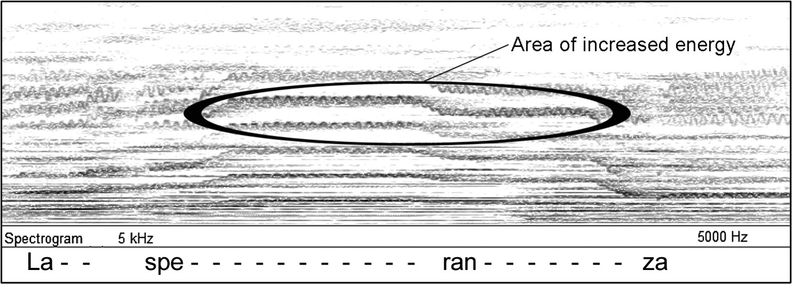
Figure 2-12: Spectrum of Bergonzi with strong harmonics highlighted
Only the orchestra is heard during the first few moments of this excerpt. Notice the change in the image at the moment the voice enters—there is a strong blooming of intensity in the region toward the middle of the spectrogram (which corresponds to the very highest notes of the piano). This is a visualization of the bright, ringing quality associated with an operatic tenor’s voice, which, for reasons we will soon learn, enables him to be heard over a loud orchestra without the help of electronic amplification. Several other aspects of vocal sound are also visible. The squiggles in some of the horizontal lines show vibrato. The varying intensity among the horizontal lines is the result of singing different vowels. Vowels are more clearly displayed in the following example (2/5 and Figure 2-13).
Media 2/5: Spectra of /i-e-a-o-u/
The spectrogram in Figure 2-13 presents an image of a baritone singing the vowel pattern /i-e-a-o-u/.[1] As in the previous example, there is a band of high energy running across the upper portion of the image that represents the ringing component in the sound. The changing patterns in the lower half of the image represent the cardinal vowels. Anyone—male or female—singing the same vowels at the same pitch would produce a similar image.
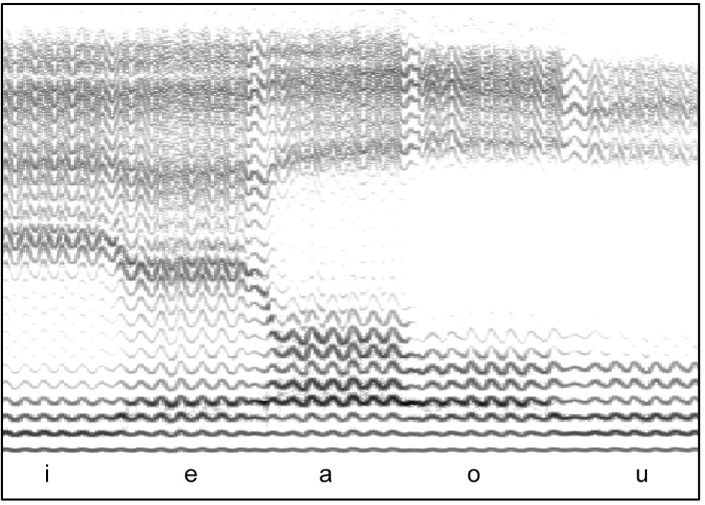
Figure 2-13: Vowels sung on single pitch
The vertical axis in a spectrogram displays the element of pitch. In Figure 2-13, only a single note is sung, yet many lines appear across the image. This is the result of the complex nature of musical sounds. When someone sings or any instrument plays a note, the sound that is heard is a combination of many different pitches. These pitches are not heard as a chord; rather, their changing patterns are responsible for the unique timbres we associate with different instrumental and vocal sounds.
The Nature of Sound
What exactly is sound? At its fundamental level, sound is compression and rarefaction within a medium. For music in general and singing in particular, that medium is the air we breathe. Sound can also travel through water, “non-breathable” gases and solids—almost anything except a vacuum. The transmission of sound is referred to as a wave. A sound wave is similar to a wave moving across the surface of water; in both cases, there is movement within the medium but not of the medium. Musical sounds that have pitch require the compression and rarefaction to be periodic, i.e., occurring at regular time intervals. One cycle of vibration (compression and rarefaction) is called a period.
A sound source, such as the oscillating vocal folds or a vibrating piano string, creates a slight pressurization (compression) of air molecules, followed immediately by a depressurization (rarefaction). This action can be visualized by thinking of the movement of a pendulum swinging back and forth relative to a fixed axis; forward movement is compression, backward is rarefaction. The slight movement of individual molecules on compression is sufficient to start a chain reaction; each molecule bumps into its neighbor, which in turn bumps into its neighbor, which in turn… (2/6).
Media 2/6: Sound propagates like a "wave cheer" in a stadium
The compression wave thereby is transferred along the line from one molecule to another until it runs out of energy or impacts someone’s eardrum. All this action happens very quickly. Under typical conditions, sound travels (propagates) at approximately 350 meters per second,[2] independent of pitch or loudness.
Sound waves are frequently depicted through a line graph. Most people are already familiar with the appearance of a pure tone, which is seen in the form of a sine wave. In this type of graph, the horizontal line at the center represents the point of equilibrium, that is, of zero pressure. At this point, there is neither compression nor rarefaction. Anything above the line is compression; anything below is rarefaction. In a sine wave, compression and rarefaction phases are exactly equal, as is demonstrated in Figure 2-14.
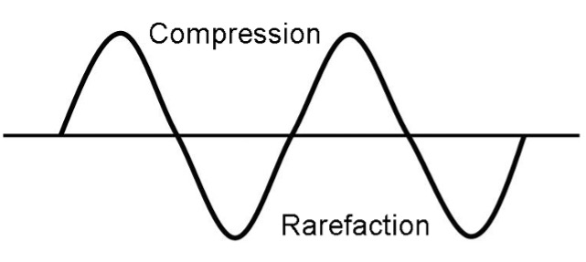
Figure 2-14: Compression and Rarefaction (positive and negative pressures)
Pure tones such as this do not occur in nature. They can, however, be generated by musical synthesizers and are typical of the sound generated by a tuning fork (2/7). All complex musical tones, such as those produced by singing, can be defined through a combination of pure tones or sine waves.
Media 2/7: Pure tone (no harmonics, only a fundamental)
Properties of Musical Sound
Musical sounds have four interrelated properties:
- Frequency (objective measurement of pitch)
- Amplitude (objective measurement of loudness)
- Spectral Envelope (objective measurement of timbre or tone color)
- Duration
Each cycle of vibration in a soundwave has measurable duration, which is defined as its period (Figure 2-4).
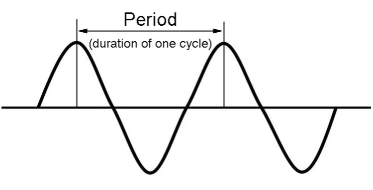
Figure 2-15: Period of vibration
A sharp, brief noise might have a single period, as demonstrated by a single clap. Other noises, such as the sound of applause, have multiple, irregular periods. These examples are said to be aperiodic; the periods are of random duration and therefore do not create an identifiable pitch. Musical sounds, however, are periodic with vibrations of equal duration that repeat enough times to create pitch. We call this repetition frequency, which is defined as the number of periods (complete cycles of vibration, including both compression and rarefaction) that occur each second within a sound wave. The unit of reference is Hertz, which is abbreviated Hz. Musicians are familiar with the concept of A440, which is the frequency symphony orchestras often use for tuning. In this case, the pitch A4 (the a-natural in the fourth octave above the lowest C-natural on the piano keyboard, also known as middle-C) is vibrating at a rate of 440 times per second, or 440Hz. If we translate this to the voice, it means the vocal folds are opening and closing 440 times every second. When a soprano sings a “high C” (C6), her vocal folds are opening and closing more than 1,000 times each second.
Frequency and pitch are not really the same. Frequency is an objective measurement of vibrations per second; pitch, however, is a subjective perception that can be influenced by factors ranging from vibrato to timbre and intensity.[3] Doubling the frequency, e.g. 220Hz to 440Hz, raises the perceived pitch by one octave; increasing frequency by 50%, e.g. 220Hz to 330Hz, raises the pitch by the interval of a perfect fifth. Semitones (minor seconds) require a frequency change of six percent. The percent relationship means each ascending step up the chromatic scale is numerically larger (six percent of 1,000 is a larger number than six percent of 100); in the lowest octave of the piano, semitones are separated by as few as 1.5 vibrations per second, but in the highest octave, frequency must be increased by over 200Hz to raise the pitch a minor second. This helps us understand why half-steps seem larger and larger as we reach the top of our singing range—they actually do get bigger, but only in Hertz. Understanding these relationships helps explain why the ancient Greeks believed Music and Mathematics were alternate faces of the same discipline.
Scientists and acousticians usually represent frequency through a linear scale, as seen in Figure 2-16. In this system, spatial separation is constant; the physical distance between 0Hz and 1,000Hz is the same as between 2,000Hz and 3,000Hz—but the former spans over six octaves and the latter less than one! Most acoustic analysis methods, such as spectrograms, display frequency in this manner.
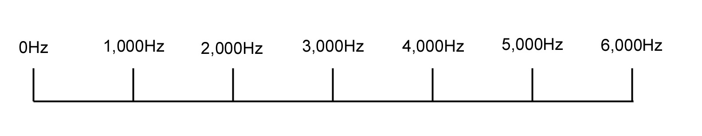
Figure 2-16: Linear display of frequency
Musicians, however, perceive frequency through the metaphor of pitch. In this system, distance between musical intervals remains constant, regardless of changes in frequency. Figure 2-17 shows the relationship between pitch and frequency as it appears on a piano keyboard.
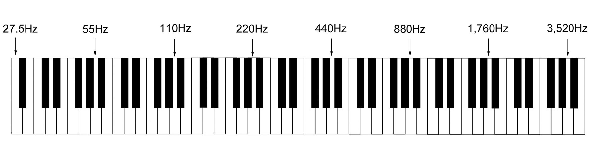
Figure 2-17: Musical (logarithmic) display of frequency
Frequency, as measured in Hertz, examines the element of time within sound (think of it as the time delay between successive compression waves in the sound). Sound also exists in space. It has already been noted that sound travels through the air at a speed of about 350 meters per second. Because of this phenomenon, the periods of a sound wave are separated both in time and distance. This spatial separation is referred to as the wavelength of a frequency, usually indicated with the Greek symbol lambda (λ). High-pitched sounds have very short wavelengths while low-pitched sounds have very long wavelengths. Therefore, it can be said that there is an inverse relationship between frequency and wavelength.
Wavelength is important in singing because sounds of different wavelengths do not propagate in the same way. High frequency sounds with short wavelengths travel in straight lines; if they encounter an obstacle in their path, they will be reflected in another direction. Long wavelength sounds, however, are less directional and tend to bend around obstacles and continue on their original path. This is why one can often hear the bass notes from the stereo in the apartment next door thumping through the wall, but not the treble. In singing, low frequencies will bend around the face from the mouth to the ears while higher frequencies continue straight ahead. Some singers accommodate this phenomenon by using a hand to reflect sound to their ears, which helps them to hear the brightness in the voice. However, for reasons that will be explained when hearing is examined, this is probably not a very good habit to acquire.
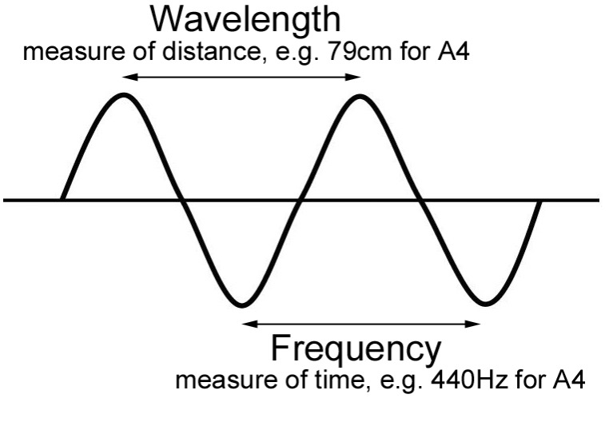
Figure 2-18: Frequency versus wavelength
If frequency, period and wavelength are confusing to you, use the analogy of watching cars on a road. If you count the number of cars that pass by each minute, you are measuring frequency. It you measure the time lapse between successive cars, you are looking at period. It you measure the physical distance between two cars, you are looking at wavelength.
Exercise your brain
Because sound travels at a constant speed, it is a simple matter to calculate the wavelength of a given frequency, which will always equal the speed of sound divided by the frequency (λ= c/f). In this equation, the letter “c” represents the constant speed of sound and the letter “f” represents the frequency. Returning to A440, we find the wavelength to be about .796 meters (350 divided by 440). Soprano C6, which vibrates at a rate of 1,046 Hz, has a wavelength of .334 meters. Bass C2, or 65 Hz, has a wavelength of 5.385 meters.
Amplitude
Amplitude is defined as the magnitude of the compressions and rarefactions within a sound wave. The most common unit of measurement is the decibel, abbreviated dB. The dB scale is logarithmic, allowing large changes in amplitude to be indicated by relatively small numerical changes (adding just 3dB doubles total amplitude). In this regard, it has more in common with the Richter scale used to measure earthquakes than the Fahrenheit or Celsius scales used to measure temperature.
The starting point for measuring amplitude is 0dB, which is standardized to 0.0002 microbars of pressure. As a point of reference, the average atmospheric pressure on the Earth is 1 bar. This gives an idea of the sensitivity of the hearing mechanism of the human body, which is able to detect pressure changes 2 million times smaller than the ambient air pressure! The threshold of normal hearing is in the range of 0-1dB. The point at which sound is felt as well as heard is about 120dB. Sounds of higher amplitude become physically painful and can quickly damage hearing; exposure to sound much above 170dB can be lethal. Table 2-1 presents the amplitude of sounds we might be exposed to in everyday life, expressed in dB.
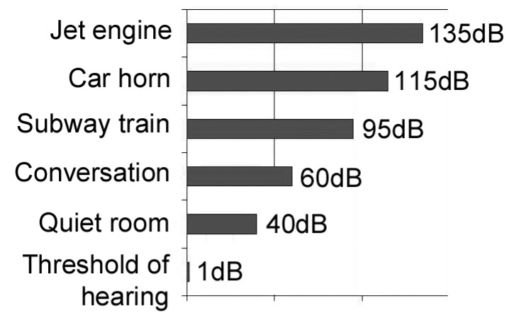
Table 2-1: Typical amplitudes
Note the 20dB difference between the amplitudes of conversational speech and the background noise in a quiet room. Speech must be at least 20dB louder than the ambient noise for easy intelligibility. This helps explain why voices become easily fatigued in noisy environments such as a party or dance (or on the bus en route to a concert). For example, if the background noise is 80dB, people must speak at 100dB to be clearly understood. Unless careful attention is paid to correct vocal technique, speaking at such high amplitude can rapidly lead to hoarseness or other vocal problems.
It is fortunate for human hearing that amplitude rapidly diminishes as a listener moves farther away from the source of a sound. Under neutral conditions, such as outdoors or in a non-reflecting room, amplitude will vary proportionally with the square of a change in distance. If the listener moves 4 times farther away, amplitude decreases by a factor of 16; if he moves twice as close, amplitude increases by a factor of 4. The complex acoustics and reflective patterns inside concert halls, however, are designed to minimize this effect, allowing sounds to be heard at nearly the same amplitude regardless of the distance between performer and listener.
The chart in Figure 2-19 can be used to determine the effect of adding sounds together without the need for higher mathematics. To use it, you must first know the difference in dB between the two sounds being combined, which can be determined using an inexpensive decibel meter commonly available at stereo and electronics shops. Locate this number on the horizontal axis and read the point at which it is intersected by the curve. Add this figure to the higher of the two amplitudes to find the combined total. For example, consider two sounds of 84 and 90dB respectively. Their difference is 6dB. The chart indicates that 1dB must be added to the higher number, resulting in total amplitude of 91dB. This experiment can be confirmed using the dB meter.

Figure 2-19: Adding decibels
Exercise your brain
Because amplitude on the dB scale is a measurement of pressure, adding sounds together does not yield intuitive results. For example, if two sopranos sing the same pitch individually at 80dB, their combined output will be 83dB, not 160dB. Their combined sound pressure level (SPL) has indeed doubled, but that increase only equates to 3dB. If, however, one produces 70dB and the other 80dB, their combined total will be only about 80.5dB—a difference that is just barely noticeable. Remember, loudness is a subjective measurement. For one sound to appear twice as loud as another, its amplitude must be 6-10dB higher. This helps explain why a choir with 40 sopranos and 10 tenors can still sound balanced and why we are not deafened by a symphony orchestra of 120 players. The physics of this phenomenon are beyond the scope of this book; readers who want further details can refer to works by Backus, Sataloff, Sundberg and Titze cited in the References section of this chapter.
Spectral Envelope
Earlier in this chapter, we looked at sound through a sine wave, which produces pure (simple) tones consisting of a single frequency. Musical tones, however, almost always include many frequencies and therefore are said to be complex. The lowest frequency in a complex wave is called the fundamental frequency, or simply the fundamental, which is abbreviated Fo.[4] Musical pitch is identified by fundamental frequency, as in A-440Hz, which we know as the pitch and frequency that orchestras use for tuning. Additional frequencies higher than the fundamental in a complex musical sound are called overtones. Two types of overtones exist: harmonic and inharmonic (sometimes all overtones are lumped together under the inclusive term partial). Harmonics are overtones that are whole-number multiples of the fundamental frequency, i.e. one-time, two-times, three-times, four-times…, and therefore are abbreviated 1Fo, 2Fo, 3Fo, 4Fo. For a fundamental of 130Hz, approximately C3, harmonics only can be present at 130Hz, 260Hz, 390Hz…, continuing upward in this pattern indefinitely. The first harmonic is one times the fundamental frequency; therefore, the fundamental is the first harmonic (do not forget this!).
The relationship between the fundamental and its harmonics is given the name harmonic series. For any given fundamental, the first twelve harmonics only can be present in the following intervallic pattern in ascending order: unison, octave, perfect fifth, perfect fourth, major third, minor third, minor third, major second, major second, major second, major second, and minor second (Figure 2-20). Harmonics often, though not always, have lower amplitude than the fundamental.
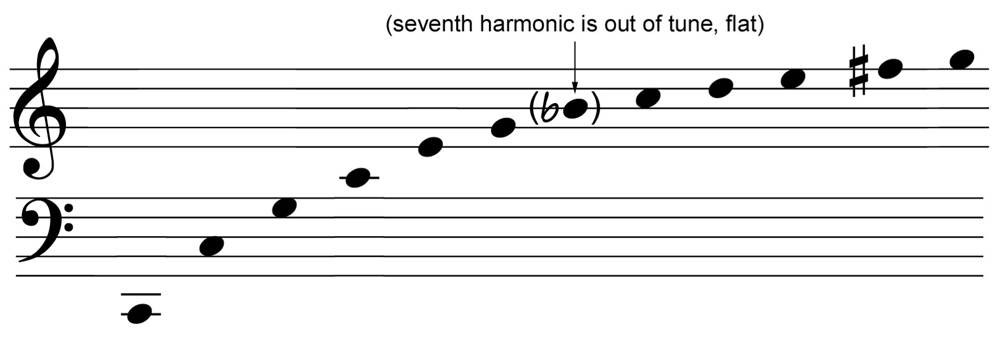
Figure 2-20: Natural harmonic series from C2
Experiment
Harmonics are easy to demonstrate with the piano. Silently depress middle-C (C4), then loudly strike and release the C-natural one octave lower (C3); you will hear C4 quietly sounding. Repeat the exercise sequentially depressing G4, C5, E5 and so on. Each will be heard to resound in response to the striking of C3. When a key is silently depressed on the piano, its damper is raised, permitting it to vibrate freely. If another note is sounded that has a harmonic corresponding to its pitch, the string will begin to vibrate in response.
Harmonics actually can be heard in the human voice under some circumstances. Throat-Singers in the Tuvan tradition sustain a drone pitch, and then shape their vocal tracts to emphasize selected harmonics (Figure 2-21). The result sounds a little like a cross between whistling and singing (2/8).
Media 2/8: Tuvan throat singing
After you listen to this example, try to discover your own harmonics. Start by sustaining a pitch in the middle part of your voice singing the vowel /i/. Very slowly morph the vowel back and forth from /i/ to /u/. As you make the vowel transition, you are likely to hear individual harmonics project as independent tones. You might even be able to control them well enough to sing a little tune.
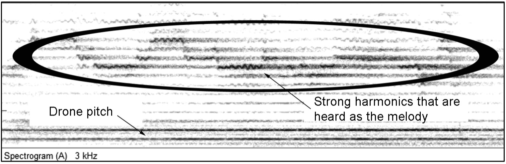
Figure 2-21: Tuvan throat singing with features indicated
Overtones that are not whole-number multiples of the fundamental are defined as being inharmonic. In musical sounds, including singing, harmonic overtones strongly dominate. Inharmonic overtones, if present, lead to roughness and make correct intonation difficult to achieve. In singing, they generally only are found in damaged or dysfunctional voices.
Timbre is the result of the unique pattern of overtones present in each musical sound. All instruments and voices produce a fundamental frequency and overtones; each, however, does so with different relative amplitudes. This is referred to as the spectral envelope. Spectral envelope can be visualized using an acoustic analysis method called a power spectrum. The resulting graph displays amplitude on the vertical axis and frequency on the horizontal axis, permitting the relationship between Fo and its harmonics to be seen clearly.
The examples in Figure 2-22 illustrate the acoustic power spectrums of a cello and a clarinet (2/9-10). Frequency range extends to 5,000Hz, which is sufficient to show at least the first 20 harmonics. Significant differences between the two instruments are revealed. The cello shows a pattern in which the third through fifth harmonics are somewhat higher in amplitude than the fundamental. The sixth harmonic is attenuated (reduced in amplitude), and the seventh all but disappears, which is acoustically beneficial, given the fact that the seventh harmonic in the series always is significantly under pitch. The eighth harmonic is virtually equal in amplitude to 2Fo, while remaining harmonics lose energy at a relatively constant rate. By contrast, Fo is the strongest part of the clarinet spectrum and all even-numbered harmonics are sharply attenuated (especially the second harmonic, which is so weak it is completely masked by the fundamental). The clarinet and cello also differ in the shape of their onset and offset of tone. This can be seen in the multimedia examples but is not apparent from the static images presented in Figure 2-22.
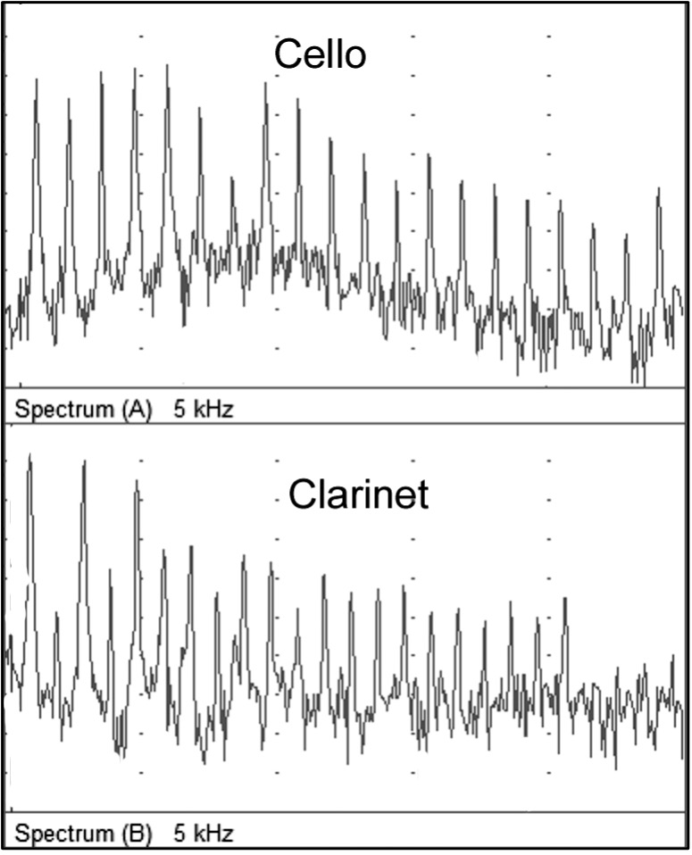
Figure 2-22: Spectra of cello and clarinet
Media 2/9: Spectrum of cello
Media 2/10: Spectrum of clarinet
What about the human voice? For now, we will only examine the sound emitted by the larynx before it is modified by traveling through the vocal tract. At this level, the sound is rich with harmonic overtones. This is important; without these overtones, the vowel sounds of speech are impossible. The power spectrum displayed in Figure 2-23, which plots frequency on the X axis and amplitude on the Y axis, represents an idealized synthesis of vocal sound as it leaves the glottis (2/11).
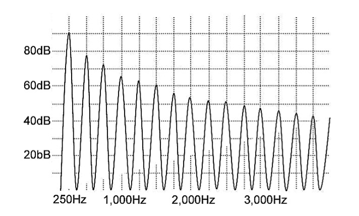
Figure 2-23: Spectrum of glottal sound
Media 2/11: Spectrum of synthesized glottal sound
The multimedia example obviously is not human. As produced by the computer, the sound is too perfect; it lacks the subtle variations expected in a human voice that result from changes in breath pressure, the beating heart, vibrato and other factors. Nonetheless, it shows the outline of the raw material with which we sing. A closer approximation of the sound produced by the vibrating vocal folds is found in example 2/12.
Media 2/12: Excised human larynx
Harmonics in the sound produced by the vibrating vocal folds gradually decrease in amplitude relative to the fundamental. This phenomenon is called spectral slope—not to be confused with spectral envelope—and can be defined as the rate at which harmonics diminish in amplitude as they rise in frequency, expressed in decibels per octave (spectral slope sometimes is referred to as spectral tilt). In a healthy, well-trained singer, the spectral slope of the glottal sound source is typically about 12dB per octave. At this rate, harmonics lose a little more than half their subjective loudness for each octave higher they rise above the fundamental. In singers with particularly “breathy” voices, the spectral slope can exceed 20dB per octave. In a loud, dramatic voice, such as that of a Heldentenor, the slope might be as low as 6dB per octave (Figure 2-24).
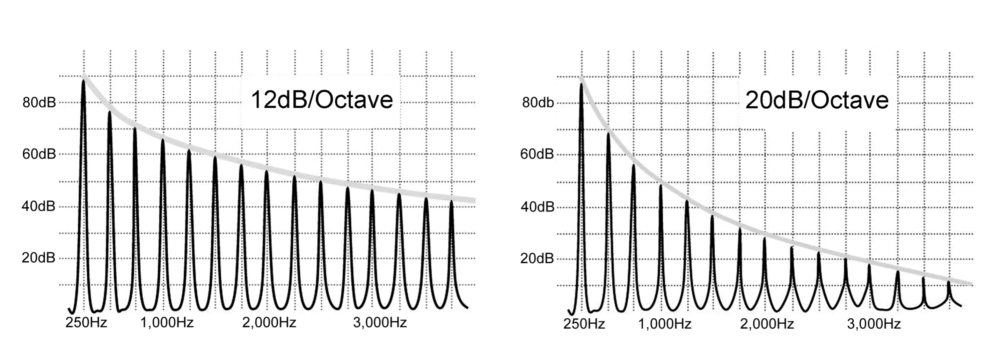
Figure 2-24: Shallow (left) and steep spectral slopes
Glottal spectral slope has a strong impact on the final sound produced by a singer. If it is very steep, high frequency harmonics will be too quiet for the singer to project over an orchestra and diction might be compromised. But if the slope is too shallow, high frequency harmonics can be so loud that the voice becomes harsh or strident.
The timbre of an instrument or voice also can be affected by sounds that are aperiodic (without frequency) or inharmonic. These include sonance—extra-musical noises such as fingers sliding up and down a guitar string or a singer loudly inhaling—inharmonic overtones, or even subharmonics. As the name implies, subharmonics are found at frequencies below Fo (e.g. ½Fo). They can appear in damaged voices and result from intermittent disturbances of the fundamental frequency. Other aperiodic noises sometimes heard in voices include breathiness, hoarseness, huskiness, and diplophonia (the unintentional, simultaneous sounding of two pitches), all of which can be signs of voice damage.
Duration
Because sound exists in the dimension of time, its fourth element, duration, is self-apparent. To be interpreted as pitch by the brain, musical sounds require adequate duration for their periodicity to become apparent. As is demonstrated in staccato, this can occur in only a few vibratory cycles.
The spectral envelope of a sound also can be affected by duration. The piano, for example, is characterized by an acute onset of sound that continuously and rapidly decreases in amplitude throughout its duration. Wind instruments, including the voice and organ, and bowed stringed instruments are capable of sustaining constant, or even increasing, amplitude for the duration of a sound.
___________________________
Review Questions
Footnotes
-
Symbols from the International Phonetic Alphabet (IPA) are used throughout this book; /i-e-a-o-u/ correspond to the vowel sounds heard in the English words meet, mate, hot, hotel & hoot. ↑
-
This is the speed of sound at sea level through air with a temperature of 37 degrees Celsius. Metric units of measurement are used throughout this book. Conversion factors are readily available in works cited in the References section of this chapter, or on the Internet for those who are more comfortable using the traditional English system of inches, feet and miles. For this example, the speed of sound could also be expressed at 783 miles per hour at an air temperature of 98.6 degrees Fahrenheit. ↑
-
a table can be found in Appendix 2 that presents the frequency values for all the pitches of the equal-tempered scale, tuned to 440Hz ↑
-
The designation Fo stands for Frequency of oscillation. When said aloud, it is F-oh, not F-zero. ↑
References and Recommended Reading
Backus, John (1977). The Acoustical Foundations of Music (2nd ed.). New York: W.W. Norton & Company.
Borden, Gloria and Katherine S. Harris (1984). Speech Science Primer: Physiology, Acoustics, and Perception of Speech (2nd ed.). Philadelphia: Williams & Wilkins.
Ladefoged, Peter (1962). Elements of Acoustic Phonetics. Chicago: The University of Chicago Press.
Sataloff, Robert Thayer (1998). Vocal Health and Pedagogy. San Diego: Singular Publishing Group, Inc.
Sundberg, Johan (1991). The Science of Musical Sounds. San Diego: Academic Press, Inc., a division of Harcourt Brace Jovanovich.
_____. (1987). The Science of the Singing Voice. DeKalb, Illinois: Northern Illinois University Press.
Titze, Ingo R (1994). Principles of Voice Production. Englewood Cliffs, New Jersey: Prentice Hall.
Zemlin, Willard R (1998). Speech and Hearing Science: Anatomy and Physiology (4th ed.). Boston: Allyn and Bacon.